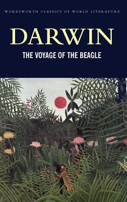

5: The Double Helix

Ratings : 🌟 3.9/5
Author : James D. Watson
Genre :Science
Year Published : 1968
Pages : 143
Brief:
By identifying the structure of DNA, the molecule of life, Francis Crick and James Watson revolutionized biochemistry & won themselves a Nobel Prize. At the time, Watson was only 24, a young scientist hungry to make his mark. His uncompromisingly honest account of the heady days of their thrilling sprint against other world-class researchers to solve one of science's greatest mysteries gives a dazzlingly clear picture of a world of brilliant scientists with great gifts, very human ambitions & bitter rivalries. With humility unspoiled by false modesty, Watson relates his & Crick's desperate efforts to beat Linus Pauling to the Holy Grail of life sciences, the identification of the basic building block of life. Never has a scientist been so truthful in capturing in words the flavor of his work.
4: Physics (Oxford World's Classics)

Ratings : 🌟 4.0/5
Author : Aristole
Genre :Historical novelScience
Year Published : 2008
Pages : 384
Brief:
For many centuries, Aristotle's Physics was the essential starting point for anyone who wished to study the natural sciences. Now, in the first translation into English since 1930, Aristotle's thought is presented accurately, with a lucid introduction and extensive notes to explain the general structure of eac section of the book, and shed light on particular problems. It simplifies and expands the style of the original, making for easier reading and better comprehension.
3: Relativity: The Special and the General Theory

Ratings : 🌟 4.2/5
Author : Albert Einstein
Genre :Science
Year Published : 1916
Pages : 130
Brief:
Relativity: The Special and the General Theory began as a short paper and was eventually published as a book written by Albert Einstein with the aim of giving: "an exact insight into the theory of relativity to those readers who, from a general scientific and philosophical point of view, are interested in the theory, but who are not conversant with the mathematical apparatus of theoretical physics."— from the Preface. It was first published in German in 1916 and later translated into English in 1920. It is divided into 3 parts, the first dealing with special relativity, the second dealing with general relativity and the third dealing with considerations on the universe as a whole. There have been many versions published since the original in 1916, the latest in December, 2011. The work has been labeled unique in that it gives readers an insight into the thought processes of one of the greatest minds of the 20th century.
2: Dialogue Concerning the Two Chief World Systems

Ratings : 🌟 4.1/5
Author : Galileo Galilei
Genre :Science
Year Published : 1632
Pages : 640
Brief:
The book is presented as a series of discussions, over a span of four days, among two philosophers and a layman:
Salviati argues for the Copernican position and presents some of Galileo's views directly, calling him the "Academician" in honor of Galileo's membership in the Accademia dei Lincei. He is named after Galileo's friend Filippo Salviati (1582–1614).
Sagredo is an intelligent layman who is initially neutral. He is named after Galileo's friend Giovanni Francesco Sagredo (1571–1620).
Simplicio, a dedicated follower of Ptolemy and Aristotle, presents the traditional views and the arguments against the Copernican position. He is supposedly named after Simplicius of Cilicia, a sixth-century commentator on Aristotle, but it was suspected the name was a double entendre, as the Italian for "simple" (as in "simple minded") is "semplice". Simplicio is modeled on two contemporary conservative philosophers, Lodovico delle Colombe (1565–1616?), Galileo's opponent, and Cesare Cremonini (1550–1631), a Paduan colleague who had refused to look through the telescope. Colombe was the leader of a group of Florentine opponents of Galileo's, which some of the latter's friends referred to as "the pigeon league".
1: Voyage of the Beagle
Ratings : 🌟 4.1/5
Author : Charles Darwin
Genre :Adventure NovelScience
Year Published : 1989
Pages : 432
Brief:
The Voyage of the Beagle is the title most commonly given to the book written by Charles Darwin and published in 1839 as his Journal and Remarks, bringing him considerable fame and respect. This was the third volume of The Narrative of the Voyages of H.M. Ships Adventure and Beagle, the other volumes of which were written or edited by the commanders of the ships. Journal and Remarks covers Darwin's part in the second survey expedition of the ship HMS Beagle. Due to the popularity of Darwin's account, the publisher reissued it later in 1839 as Darwin's Journal of Researches, and the revised second edition published in 1845 used this title. A republication of the book in 1905 introduced the title The Voyage of the "Beagle", by which it is now best known.